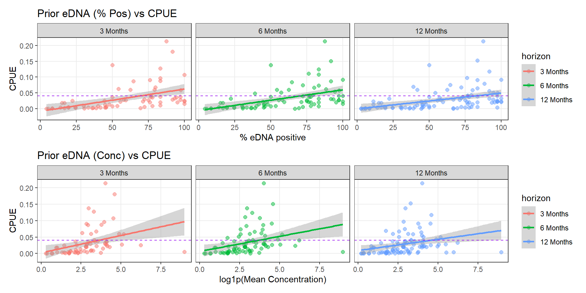
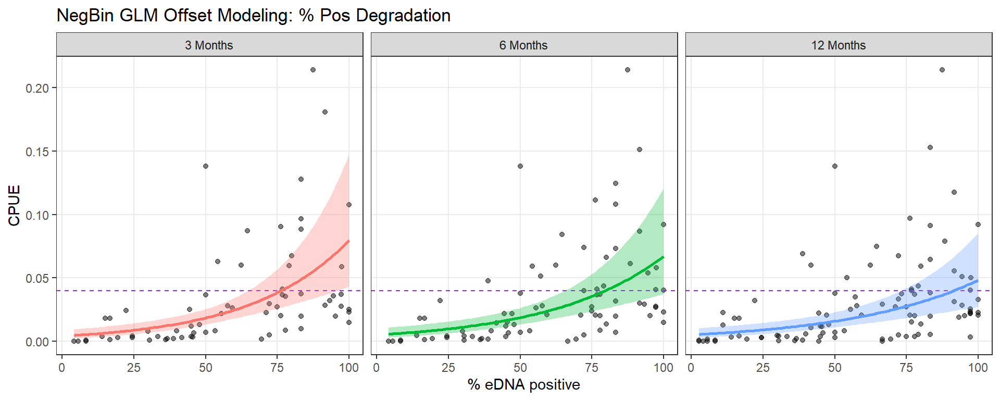
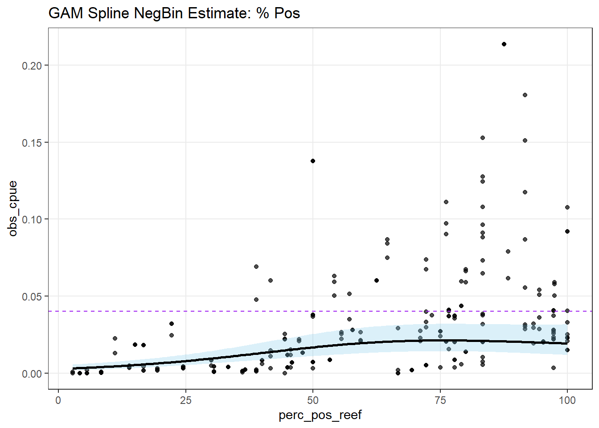
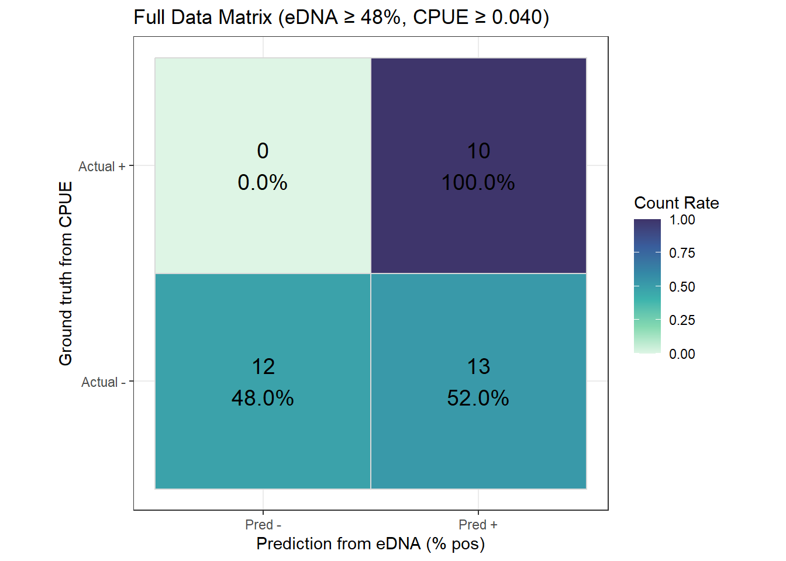
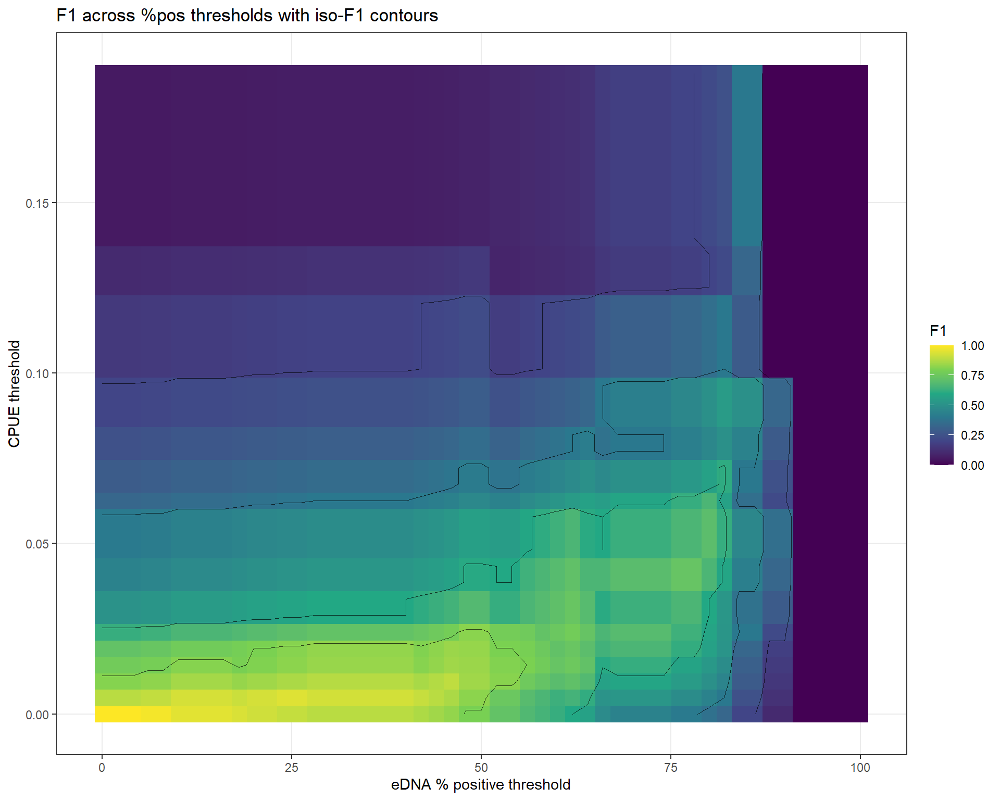
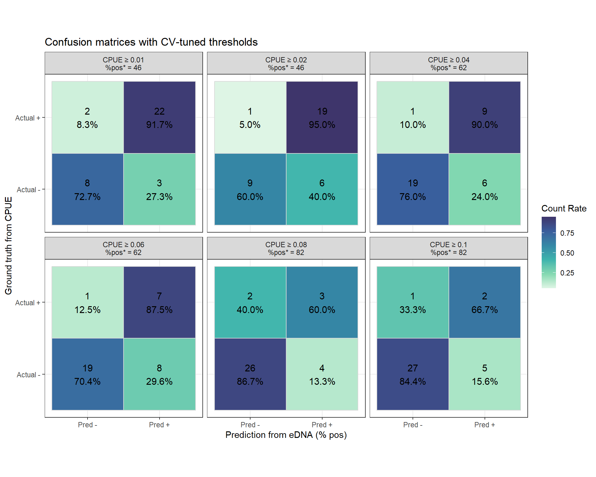
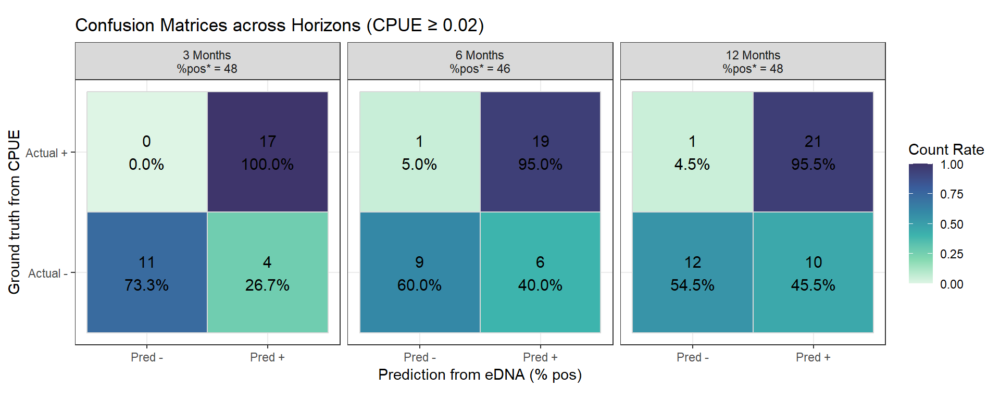
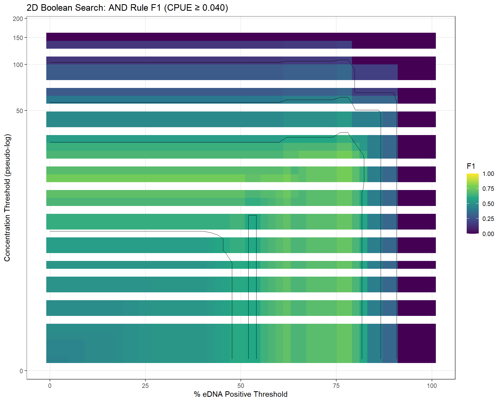
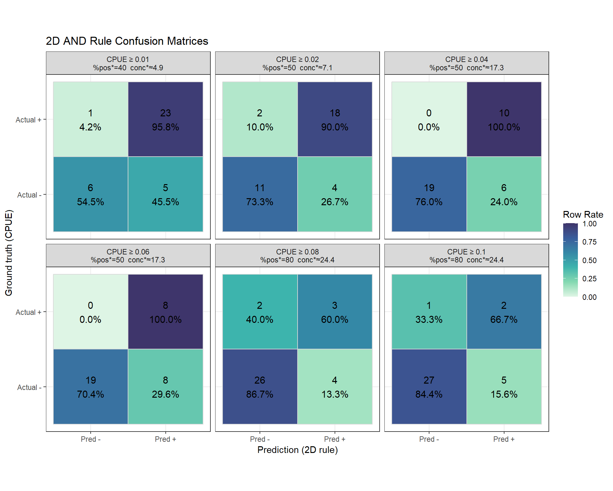

Code
# Formatting labels for linear models
# Confusion matrices and Evaluation MetricsLoad the necessary libraries and create helper functions that will be used for modeling, evaluation, and plotting throughout the analysis.
# Formatting labels for linear models
# Confusion matrices and Evaluation MetricsRead raw CPUE (cull) and eDNA data.
Analytical Fixes Implemented: - Swapped CSV reading for native Excel reading via readxl. - Removed explicit character-to-date formatting strings ("%d/%m/%Y") that fail on native Excel timestamps, substituting to rely on as.Date acting structurally on numeric-date representations. - Extracted and normalized column names with explicit checks.
# Load Cull data
cull.dat <- read_excel("data/260201_COTS-Cull-Data-Ewels.xlsx", sheet = "Cull")
# Load eDNA data
edna.dat <- read_excel("data/eDNA data_ALL_20260225.xlsx", sheet = "eDNA_data_ALL")
# Clean Cull Data
cull <- cull.dat %>%
rename(Reef = ReefName) %>%
mutate(date_cull = as.Date(SurveyDate))
# Aggregate eDNA data
edna_agg <- edna.dat %>%
filter(!is.na(Year)) %>%
rename(Collection.organisation = `Collection organisation`) %>%
mutate(
Reef = ReefName,
Collection.org = ifelse(Collection.organisation == "AIMS", "AIMS", "Other"),
date_edna = as.Date(Date), # Excel supplies native dates
Conc_mean = as.numeric(Conc_mean)
) %>%
arrange(Reef, Year, date_edna) %>%
group_by(Reef, Collection.org, Year) %>%
# cluster rows into groups where consecutive samples are ≤ 7 days apart
mutate(
grp = cumsum(
if_else(
is.na(lag(date_edna)) | as.numeric(date_edna - lag(date_edna)) > 7,
1L, 0L
)
)
) %>%
ungroup() %>%
group_by(Reef, Collection.org, Year, grp) %>%
summarise(
date_edna = min(date_edna),
conc_mean = mean(Conc_mean, na.rm = TRUE),
perc_pos = mean(LOD_sample_positive, na.rm = TRUE) * 100,
n_samples = n(),
.groups = "drop"
)Merge datasets geographically bounding matches within varying time intervals.
win_days <- 183
same6_any <- fuzzy_inner_join(
cull, edna_agg,
by = c("Reef" = "Reef", "date_cull" = "date_edna"),
match_fun = list(
`==`,
function(cull_date, edna_date) {
abs(as.numeric(cull_date - edna_date)) <= win_days
}
)
) %>%
mutate(diff_days = as.numeric(date_cull - date_edna), Reef = Reef.x)
reef_any <- same6_any %>%
group_by(Reef, Collection.org) %>%
summarise(
total_cots = sum(Cohort1 + Cohort2 + Cohort3 + Cohort4, na.rm = TRUE),
total_bottom = sum(Bottomtime, na.rm = TRUE),
cpue_reef = total_cots / total_bottom,
perc_pos_reef = mean(perc_pos, na.rm = TRUE),
conc_mean_reef = mean(conc_mean, na.rm = TRUE),
n_matches = n(),
.groups = "drop"
)This represents the primary actionability condition: Did a prior eDNA signal capture an ongoing or succeeding COTS outbreak? We evaluate three horizons to observe signal degradation.
reef_prior_3m <- get_prior_cohort(cull, edna_agg, 91, "3 Months")
reef_prior_6m <- get_prior_cohort(cull, edna_agg, 183, "6 Months")
reef_prior_12m <- get_prior_cohort(cull, edna_agg, 365, "12 Months")
reef_before <- bind_rows(reef_prior_3m, reef_prior_6m, reef_prior_12m) %>%
mutate(horizon = factor(horizon, levels = c("3 Months", "6 Months", "12 Months")))p1 <- ggplot(reef_before, aes(x = perc_pos_reef, y = cpue_reef, color = horizon)) +
geom_point(alpha = 0.5, size = 2) +
geom_smooth(method = "lm", se = TRUE) +
geom_hline(yintercept = 0.04, linetype = "dashed", color = "purple") +
labs(x = "% eDNA positive", y = "CPUE", title = "Prior eDNA (% Pos) vs CPUE") +
facet_wrap(~horizon)
p2 <- ggplot(reef_before, aes(x = log1p(conc_mean_reef), y = cpue_reef, color = horizon)) +
geom_point(alpha = 0.5, size = 2) +
geom_smooth(method = "lm", se = TRUE) +
geom_hline(yintercept = 0.04, linetype = "dashed", color = "purple") +
labs(x = "log1p(Mean Concentration)", y = "CPUE", title = "Prior eDNA (Conc) vs CPUE") +
facet_wrap(~horizon)
p1 / p2
We model discrete outcomes (observed COTS numbers) strictly to better encompass count structure offsets driven by varying bottom time. We filter extreme conc_mean_reef >= 5000 to constrain highly anomalous impacts on variance gradients.
# Filter outliers systematically at modeling onset
dat_glmm <- reef_before %>%
mutate(
conc_t = log1p(conc_mean_reef),
obs_cpue = total_cots / total_bottom
) %>%
filter(
!is.na(total_cots), !is.na(total_bottom), total_bottom > 0,
!is.na(perc_pos_reef), !is.na(conc_t), !is.na(Reef),
conc_mean_reef < 5000
) %>%
mutate(Reef = factor(Reef)) %>%
droplevels()
effort_ref <- median(dat_glmm$total_bottom, na.rm = TRUE)horizons <- levels(dat_glmm$horizon)
nd_all <- map_dfr(horizons, ~ fit_horizon_glmm(.x, dat_glmm)) %>%
mutate(horizon = factor(horizon, levels = horizons))
ggplot(dat_glmm, aes(x = perc_pos_reef, y = obs_cpue)) +
geom_point(alpha = 0.5) +
geom_hline(yintercept = 0.04, linetype = "dashed", color = "purple") +
geom_ribbon(data = nd_all, aes(x = perc_pos_reef, ymin = lcl_cpue, ymax = ucl_cpue, fill = horizon), alpha = 0.3, inherit.aes = FALSE) +
geom_line(data = nd_all, aes(x = perc_pos_reef, y = fit_cpue, color = horizon), linewidth = 1, inherit.aes = FALSE) +
facet_wrap(~horizon) +
labs(x = "% eDNA positive", y = "CPUE", title = "NegBin GLM Offset Modeling: % Pos Degradation") +
theme(legend.position = "none")
m_nb_base <- glmmTMB(
total_cots ~ perc_pos_reef + offset(log(total_bottom)) + (1 | Reef),
family = nbinom2(),
data = dat_glmm
)
m_nb_both <- glmmTMB(
total_cots ~ perc_pos_reef * conc_t + offset(log(total_bottom)) + (1 | Reef),
family = nbinom2(),
data = dat_glmm
)
# Interaction Anova Validation
anova(m_nb_base, m_nb_both)Data: dat_glmm
Models:
m_nb_base: total_cots ~ perc_pos_reef + offset(log(total_bottom)) + (1 | , zi=~0, disp=~1
m_nb_base: Reef), zi=~0, disp=~1
m_nb_both: total_cots ~ perc_pos_reef * conc_t + offset(log(total_bottom)) + , zi=~0, disp=~1
m_nb_both: (1 | Reef), zi=~0, disp=~1
Df AIC BIC logLik deviance Chisq Chi Df Pr(>Chisq)
m_nb_base 4 2674.9 2688.9 -1333.4 2666.9
m_nb_both 6 2669.9 2690.9 -1328.9 2657.9 8.9912 2 0.01116 *
---
Signif. codes: 0 '***' 0.001 '**' 0.01 '*' 0.05 '.' 0.1 ' ' 1Comparing linear assumptions against structured splines.
g_perc <- gam(
total_cots ~ s(perc_pos_reef, k = 3) + s(Reef, bs = "re") + offset(log(total_bottom)),
family = nb(), method = "REML",
data = dat_glmm
)
nd_gam <- tibble(
perc_pos_reef = seq(min(dat_glmm$perc_pos_reef), max(dat_glmm$perc_pos_reef), length.out = 200),
total_bottom = effort_ref,
Reef = dat_glmm$Reef[1]
)
pp_perc <- predict(g_perc, newdata = nd_gam, type = "link", se.fit = TRUE, exclude = "s(Reef)")
nd_gam <- nd_gam %>%
mutate(
fit_cpue = exp(pp_perc$fit) / total_bottom,
lcl_cpue = exp(pp_perc$fit - 1.96 * pp_perc$se.fit) / total_bottom,
ucl_cpue = exp(pp_perc$fit + 1.96 * pp_perc$se.fit) / total_bottom
)
ggplot(dat_glmm, aes(x = perc_pos_reef, y = obs_cpue)) +
geom_point(alpha = 0.7) +
geom_hline(yintercept = 0.04, linetype = "dashed", color = "purple") +
geom_ribbon(data = nd_gam, aes(x = perc_pos_reef, ymin = lcl_cpue, ymax = ucl_cpue), alpha = 0.3, fill = "skyblue", inherit.aes = FALSE) +
geom_line(data = nd_gam, aes(x = perc_pos_reef, y = fit_cpue), linewidth = 1, color = "black", inherit.aes = FALSE) +
labs(title = "GAM Spline NegBin Estimate: % Pos")
We iterate over thresholds matching traditional Management logic.
# Set CPUE Management Threshold
cpue_thresh <- 0.04
# Baseline uses 6 Months max window; Aggregating strictly by Reef
dat_evt <- dat_glmm %>%
filter(horizon == "6 Months") %>%
group_by(Reef, Collection.org) %>%
summarise(
counts = sum(total_cots, na.rm = TRUE),
total_bottom = sum(total_bottom, na.rm = TRUE),
perc_pos = mean(perc_pos_reef, na.rm = TRUE),
conc_mean_reef = mean(conc_mean_reef, na.rm = TRUE),
.groups = "drop"
) %>%
mutate(
reef = Reef,
cpue = counts / total_bottom,
conc_t = log1p(conc_mean_reef)
) %>%
dplyr::select(reef, Collection.org, perc_pos, conc_t, conc_mean_reef, cpue)
res_all <- make_confusion(dat_evt, perc_thresh = 48, cpue_thresh = cpue_thresh)
plot_confusion(res_all, title = sprintf("Full Data Matrix (eDNA ≥ 48%%, CPUE ≥ %.3f)", cpue_thresh))
We utilize out-of-fold rsample stratification testing to derive optimal classification rules explicitly guarding F1 recall bounds under variable density environments.
# 1) Evaluate on a grid of %pos AND cpue thresholds (Heatmap)
perc_grid <- seq(0, 100, by = 2)
cpue_grid <- seq(0, quantile(dat_evt$cpue, 0.99, na.rm = TRUE), length.out = 40)
grid <- tidyr::expand_grid(perc_thresh = perc_grid, cpue_thresh = cpue_grid) %>%
mutate(
out = purrr::pmap(., ~ metrics_for(..1, ..2, dat_evt)),
F1 = vapply(out, `[[`, numeric(1), "F1"),
Accuracy = vapply(out, `[[`, numeric(1), "Accuracy")
) %>%
dplyr::select(-out)
# F1 Heatmap
p_hm <- ggplot(grid, aes(x = perc_thresh, y = cpue_thresh, fill = F1)) +
geom_raster() +
geom_contour(aes(z = F1), breaks = seq(0.2, 1, by = 0.2), colour = "black", linewidth = 0.3, alpha = 0.7) +
scale_fill_viridis_c(limits = c(0, 1)) +
labs(x = "eDNA % positive threshold", y = "CPUE threshold", fill = "F1", title = "F1 across %pos thresholds with iso-F1 contours")
# 2) Cross validate across multiple CPUE levels
cpue_levels <- c(0.01, 0.02, 0.04, 0.06, 0.08, 0.10)
k <- 5
R <- 100 # Reduced from 200 for rendering speed
set.seed(1)
results <- map(cpue_levels, ~ run_cv_for_cpue(dat_evt, .x, perc_grid, k = k, R = R))
summary_table <- map_dfr(results, "perf_sum") %>%
mutate(
F1_mean_se = sprintf("%.3f ± %.3f", F1_mean, F1_se),
Acc_mean_se = sprintf("%.3f ± %.3f", Acc_mean, Acc_se),
Prec_mean_se = sprintf("%.3f ± %.3f", Prec_mean, Prec_se),
Rec_mean_se = sprintf("%.3f ± %.3f", Rec_mean, Rec_se)
) %>%
dplyr::select(cpue_thr, perc_star, F1_mean_se, Acc_mean_se, Prec_mean_se, Rec_mean_se)
# Show the optimal threshold summary
summary_table# A tibble: 6 × 6
cpue_thr perc_star F1_mean_se Acc_mean_se Prec_mean_se Rec_mean_se
<dbl> <dbl> <chr> <chr> <chr> <chr>
1 0.01 46 0.897 ± 0.004 0.858 ± 0.006 0.890 ± 0.005 0.917 ± 0.006
2 0.02 46 0.849 ± 0.004 0.800 ± 0.006 0.779 ± 0.006 0.950 ± 0.004
3 0.04 62 0.732 ± 0.008 0.800 ± 0.006 0.646 ± 0.009 0.900 ± 0.009
4 0.06 62 0.605 ± 0.010 0.741 ± 0.007 0.494 ± 0.011 0.868 ± 0.013
5 0.08 82 0.456 ± 0.018 0.829 ± 0.006 0.393 ± 0.017 0.600 ± 0.022
6 0.1 82 0.251 ± 0.016 0.829 ± 0.006 0.227 ± 0.015 0.321 ± 0.020# Plot multi-panel confusion matrices
cm_all <- map_dfr(results, function(r) {
r$cm_full$cm %>% mutate(cpue_thr = r$cpue_thr, perc_star = r$perc_star)
}) %>% mutate(panel = paste0("CPUE ≥ ", cpue_thr, "\n%pos* = ", perc_star))
p_cm <- ggplot(cm_all, aes(x = pred, y = actual, fill = row_prop)) +
geom_tile(color = "grey85", linewidth = 0.4) +
geom_text(aes(label = label), size = 4, color = "black") +
facet_wrap(~panel, ncol = 3) +
scale_fill_viridis_c(option = "mako", direction = -1, begin = 0.25, name = "Count Rate") +
labs(x = "Prediction from eDNA (% pos)", y = "Ground truth from CPUE", title = "Confusion matrices with CV-tuned thresholds") +
coord_fixed()
p_hm
p_cm
To evaluate eDNA signal durability, we cross-validate optimal % Pos thresholds iteratively across our three temporal windows (3 Months, 6 Months, 12 Months) targeting the management CPUE constraint of 0.02.
cpue_target <- 0.02
# Ensure we aggregate strictly by Reef to prevent Site-level contamination
dat_evt_hor <- dat_glmm %>%
group_by(Reef, Collection.org, horizon) %>%
summarise(
counts = sum(total_cots, na.rm = TRUE),
total_bottom = sum(total_bottom, na.rm = TRUE),
perc_pos = mean(perc_pos_reef, na.rm = TRUE),
.groups = "drop"
) %>%
mutate(
reef = Reef,
cpue = counts / total_bottom
) %>%
dplyr::select(reef, Collection.org, perc_pos, cpue, horizon)
horizons <- levels(dat_evt_hor$horizon)
results_hor <- map(horizons, ~ run_cv_for_horizon(dat_evt_hor, .x, cpue_target, perc_grid, k = k, R = R))
summary_hor <- map_dfr(results_hor, "perf_sum") %>%
mutate(
F1_mean_se = sprintf("%.3f ± %.3f", F1_mean, F1_se),
Acc_mean_se = sprintf("%.3f ± %.3f", Acc_mean, Acc_se),
Prec_mean_se = sprintf("%.3f ± %.3f", Prec_mean, Prec_se),
Rec_mean_se = sprintf("%.3f ± %.3f", Rec_mean, Rec_se)
) %>%
dplyr::select(horizon, cpue_thr, perc_star, F1_mean_se, Acc_mean_se, Prec_mean_se, Rec_mean_se)
summary_hor# A tibble: 3 × 7
horizon cpue_thr perc_star F1_mean_se Acc_mean_se Prec_mean_se Rec_mean_se
<chr> <dbl> <dbl> <chr> <chr> <chr> <chr>
1 3 Months 0.02 48 0.900 ± 0.0… 0.873 ± 0.… 0.829 ± 0.0… 1.000 ± 0.…
2 6 Months 0.02 46 0.849 ± 0.0… 0.800 ± 0.… 0.780 ± 0.0… 0.950 ± 0.…
3 12 Months 0.02 48 0.797 ± 0.0… 0.751 ± 0.… 0.692 ± 0.0… 0.955 ± 0.…cm_all_hor <- map_dfr(results_hor, function(r) {
r$cm_full$cm %>% mutate(cpue_thr = r$cpue_thr, perc_star = r$perc_star)
}) %>% mutate(panel = factor(paste0(horizon, "\n%pos* = ", perc_star), levels = paste0(levels(dat_evt_hor$horizon), "\n%pos* = ", map_dbl(results_hor, "perc_star"))))
p_cm_hor <- ggplot(cm_all_hor, aes(x = pred, y = actual, fill = row_prop)) +
geom_tile(color = "grey85", linewidth = 0.4) +
geom_text(aes(label = label), size = 4, color = "black") +
facet_wrap(~panel, ncol = 3) +
scale_fill_viridis_c(option = "mako", direction = -1, begin = 0.25, name = "Count Rate") +
labs(x = "Prediction from eDNA (% pos)", y = "Ground truth from CPUE", title = sprintf("Confusion Matrices across Horizons (CPUE ≥ %.2f)", cpue_target)) +
coord_fixed()
p_cm_hor
Combining % Pos AND % Conc conditions under 2D constraints. By modeling concentration in log-transformed space (conc_t), we fix skewed grid sparsity and resolve the F1 heatmaps dropping out continuously.
# Tune on transformed concentration to avoid skewness clustering 0s all the way across
conc_t_max <- quantile(dat_evt$conc_t, 0.99, na.rm = TRUE)
conc_grid_t <- seq(min(dat_evt$conc_t, na.rm = TRUE), conc_t_max, length.out = 30)
# Evaluate OR and AND grids over 2D thresholds for a baseline cpue
cpue_star <- 0.04
grid_both_and <- tidyr::expand_grid(perc_thresh = seq(0, 100, by = 2), conc_thresh_t = conc_grid_t) %>%
mutate(
out = purrr::pmap(., ~ metrics_for_both(..1, ..2, cpue_star, "and", dat_evt)),
F1 = vapply(out, `[[`, numeric(1), "F1")
)
p_2dhm <- ggplot(grid_both_and, aes(x = perc_thresh, y = expm1(conc_thresh_t), fill = F1)) +
geom_raster() +
geom_contour(aes(z = F1), breaks = seq(0.2, 0.9, by = 0.2), colour = "black", linewidth = 0.3) +
scale_fill_viridis_c(limits = c(0, 1)) +
scale_y_continuous(trans = scales::pseudo_log_trans(sigma = 1)) +
labs(x = "% eDNA Positive Threshold", y = "Concentration Threshold (pseudo-log)", title = sprintf("2D Boolean Search: AND Rule F1 (CPUE ≥ %.3f)", cpue_star))
# Full 2D Loop over CPUE levels
results_2d <- map(cpue_levels, ~ run_cv_2d(dat_evt, .x, seq(0, 100, by = 5), conc_grid_t, rule = "and")) # %>% discard(is.null)
summary_table_2d <- map_dfr(results_2d, "perf") %>%
mutate(
F1_mean_se = sprintf("%.3f ± %.3f", F1_mean, F1_se),
Acc_mean_se = sprintf("%.3f ± %.3f", Acc_mean, Acc_se),
Prec_mean_se = sprintf("%.3f ± %.3f", Prec_mean, Prec_se),
Rec_mean_se = sprintf("%.3f ± %.3f", Rec_mean, Rec_se)
) %>%
dplyr::select(cpue_thr, perc_star, conc_mean_star, F1_mean_se, Acc_mean_se, Prec_mean_se, Rec_mean_se)
# Show operational 2D thresholds
summary_table_2d# A tibble: 6 × 7
cpue_thr perc_star conc_mean_star F1_mean_se Acc_mean_se Prec_mean_se
<dbl> <dbl> <dbl> <chr> <chr> <chr>
1 0.01 40 4.85 0.815 ± 0.005 0.750 ± 0.006 0.827 ± 0.006
2 0.02 50 7.11 0.808 ± 0.006 0.774 ± 0.006 0.806 ± 0.007
3 0.04 50 17.3 0.633 ± 0.012 0.777 ± 0.006 0.585 ± 0.013
4 0.06 50 17.3 0.461 ± 0.014 0.739 ± 0.006 0.407 ± 0.014
5 0.08 80 24.4 0.223 ± 0.012 0.721 ± 0.006 0.155 ± 0.009
6 0.1 80 24.4 0.104 ± 0.010 0.776 ± 0.007 0.083 ± 0.009
# ℹ 1 more variable: Rec_mean_se <chr># Plot 2D Multi-CM
thr_df <- map_dfr(results_2d, "thr") %>% mutate(cpue_thr = sapply(results_2d, function(x) x$perf$cpue_thr))
cm_all_2d <- pmap_dfr(list(thr_df$cpue_thr, thr_df$perc_star, thr_df$conc_t_star), function(cp, p, c) {
obj <- make_confusion_2d(dat_evt, p, c, cp)
obj$cm %>% mutate(panel = paste0("CPUE ≥ ", cp, "\n%pos*=", round(p, 1), " conc*≈", round(pmax(expm1(c), 0), 1)))
})
p_2dcm <- ggplot(cm_all_2d, aes(pred, actual, fill = row_prop)) +
geom_tile(color = "grey85", linewidth = 0.4) +
geom_text(aes(label = label), size = 4, color = "black") +
facet_wrap(~panel, ncol = 3) +
scale_fill_viridis_c(option = "mako", direction = -1, begin = 0.25, limits = c(0, 1), name = "Row Rate") +
labs(x = "Prediction (2D rule)", y = "Ground truth (CPUE)", title = "2D AND Rule Confusion Matrices") +
coord_fixed()
p_2dhm
p_2dcm
To evaluate eDNA’s predictive power at granular physical site boundaries rather than arbitrary Reefs, we extract explicit geographic boundaries from both datasets. Cultivating representative site locations mitigates broader environmental noise by strictly evaluating COTS overlap physically clustered against the immediate eDNA sample trace.
Importantly, this spatial test formally evaluates differing sampling regimes present in the program (e.g., 4 sites x 6 samples vs 3 sites x 12 samples).
library(sf)
# 1. Standardize eDNA sample cohorts by their physical 'Site' level rather than 'Reef' layer
edna_site <- edna.dat %>%
filter(!is.na(Lat), !is.na(Long), !is.na(Year)) %>%
mutate(date_edna = as.Date(Date)) %>%
group_by(ReefName, Site_name, Year) %>%
summarise(
Lat = mean(Lat),
Long = mean(Long),
date_edna = min(date_edna),
conc_mean = mean(as.numeric(Conc_mean), na.rm = TRUE),
perc_pos = mean(LOD_sample_positive, na.rm = TRUE) * 100,
n_samples = n(),
.groups = "drop"
) %>%
rename(Reef = ReefName)
# 2. Tag Sampling Regimes based on local density
# (avg_samples per site usually bounds around ~6 or ~12)
regime_df <- edna_site %>%
group_by(Reef, Year) %>%
summarise(
avg_samples = mean(n_samples),
.groups = "drop"
) %>%
mutate(
regime = case_when(
avg_samples >= 10 ~ "3x12 Density",
TRUE ~ "4x6 Density"
)
)
edna_site <- edna_site %>% left_join(regime_df, by = c("Reef", "Year"))
# 3. Project coordinate matrices into native EPSG:3112 (Lambert Conformal Conic for AUS)
edna_sf <- st_as_sf(edna_site, coords = c("Long", "Lat"), crs = 4326) %>% st_transform(3112)
cull_sf <- cull %>%
filter(!is.na(Longitude), !is.na(Latitude)) %>%
st_as_sf(coords = c("Longitude", "Latitude"), crs = 4326) %>%
st_transform(3112)We generate buffers drawn iteratively radially outward (200m, 500m, 1km, 2km), isolate matching Culls occurring inside those rings within a 6-month prior trace window, and test CPUE prediction capabilities over regimes.
buffer_radii <- c(200, 500, 1000, 2000)
spatial_results <- list()
for (dist_m in buffer_radii) {
# Radial expansion around each eDNA point
edna_buf <- st_buffer(edna_sf, dist = dist_m)
# Isolate Cull coordinates bounding inside the circle
intersect_cull <- st_join(edna_buf, cull_sf, join = st_intersects) %>%
filter(!is.na(date_cull))
# Constrain to 6 month temporal overlaps
valid_encounters <- intersect_cull %>%
mutate(diff_days = as.numeric(date_cull - date_edna)) %>%
filter(diff_days >= 0 & diff_days <= 183)
# Collapse cull metadata back onto the respective eDNA Site ID
site_cpue <- valid_encounters %>%
st_drop_geometry() %>%
rename(any_of(c(Reef = "Reef.x", Year = "Year.x"))) %>%
group_by(Reef, Site_name, Year, regime, perc_pos) %>%
summarise(
counts = sum(Cohort1 + Cohort2 + Cohort3 + Cohort4, na.rm = TRUE),
total_bottom = sum(Bottomtime, na.rm = TRUE),
.groups = "drop"
) %>%
mutate(
cpue = counts / total_bottom,
radius = paste0(dist_m, "m Radius")
)
spatial_results[[as.character(dist_m)]] <- site_cpue
}
df_spatial <- bind_rows(spatial_results) %>%
mutate(radius = factor(radius, levels = paste0(buffer_radii, "m Radius")))
# Run CV Threshold tuning evaluating spatial density bounds
# We evaluate both 0.04 and 0.02 CPUE Targets, using unified global thresholds per radius.
res_04 <- evaluate_unified_spatial(df_spatial, 0.04, seq(0, 100, by = 5))
if (!is.null(res_04)) {
p_spatial_04 <- res_04$p
print(p_spatial_04)
}NULLres_02 <- evaluate_unified_spatial(df_spatial, 0.02, seq(0, 100, by = 5))
if (!is.null(res_02)) {
p_spatial_02 <- res_02$p
print(p_spatial_02)
}NULLTo comprehensively evaluate how effectively explicit geographic thresholds constrain eDNA predictive capabilities, we calculate several rigorous statistical classifications:
CPUE >= Target) that the eDNA signal correctly bounded. A high sensitivity guarantees we rarely miss active physical outbreaks.CPUE < Target) that triggered a false alarm on the eDNA index. Lower is structurally better to limit wasted physical deployment sweeps.% Pos, what percentage of the time was it structurally correct natively? High precision binds deployment efficiency.F1 to balance outbreak responsiveness securely alongside environmental noise.metrics_list <- list()
if (exists("res_04") && !is.null(res_04)) metrics_list[["0.04"]] <- res_04$cm
if (exists("res_02") && !is.null(res_02)) metrics_list[["0.02"]] <- res_02$cm
if (length(metrics_list) > 0) {
df_metrics <- bind_rows(metrics_list, .id = "CPUE") %>%
mutate(class = case_when(
pred == "Pred +" & actual == "Actual +" ~ "TP",
pred == "Pred +" & actual == "Actual -" ~ "FP",
pred == "Pred -" & actual == "Actual +" ~ "FN",
pred == "Pred -" & actual == "Actual -" ~ "TN"
)) %>%
dplyr::select(CPUE, radius, regime, perc_star, class, n) %>%
pivot_wider(names_from = class, values_from = n, values_fill = list(n = 0)) %>%
mutate(
TPR = TP / (TP + FN + 1e-9),
Sensitivity = TPR,
FPR = FP / (FP + TN + 1e-9),
Precision = TP / (TP + FP + 1e-9),
F1 = 2 * (Precision * TPR) / (Precision + TPR + 1e-9)
) %>%
arrange(CPUE, radius, regime) %>%
dplyr::select(
CPUE,
Radius = radius, Regime = regime, `% Pos Target` = perc_star,
TPR, FPR, Sensitivity, Precision, F1
)
# Expose the formatted statistics natively inside the rendered workflow
df_metrics %>%
mutate(across(c(TPR, FPR, Sensitivity, Precision, F1), ~ round(.x, 3))) %>%
knitr::kable(caption = "Site-Level Performance Statistics bounded by Spatial Extents & Regimes")
}| CPUE | Radius | Regime | % Pos Target | TPR | FPR | Sensitivity | Precision | F1 |
|---|---|---|---|---|---|---|---|---|
| 0.02 | 1000m Radius | 3x12 Density | 60 | 0.947 | 0.404 | 0.947 | 0.720 | 0.818 |
| 0.02 | 1000m Radius | 4x6 Density | 60 | 0.714 | 0.286 | 0.714 | 0.625 | 0.667 |
| 0.02 | 2000m Radius | 3x12 Density | 50 | 0.855 | 0.508 | 0.855 | 0.696 | 0.768 |
| 0.02 | 2000m Radius | 4x6 Density | 50 | 0.900 | 0.100 | 0.900 | 0.900 | 0.900 |
| 0.02 | 200m Radius | 3x12 Density | 55 | 0.905 | 0.364 | 0.905 | 0.826 | 0.864 |
| 0.02 | 200m Radius | 4x6 Density | 55 | 1.000 | 0.000 | 1.000 | 1.000 | 1.000 |
| 0.02 | 500m Radius | 3x12 Density | 50 | 0.958 | 0.543 | 0.958 | 0.708 | 0.814 |
| 0.02 | 500m Radius | 4x6 Density | 50 | 0.917 | 0.267 | 0.917 | 0.733 | 0.815 |
| 0.04 | 1000m Radius | 3x12 Density | 85 | 0.765 | 0.240 | 0.765 | 0.591 | 0.667 |
| 0.04 | 1000m Radius | 4x6 Density | 85 | 0.333 | 0.130 | 0.333 | 0.571 | 0.421 |
| 0.04 | 2000m Radius | 3x12 Density | 65 | 0.895 | 0.481 | 0.895 | 0.400 | 0.553 |
| 0.04 | 2000m Radius | 4x6 Density | 65 | 0.687 | 0.250 | 0.687 | 0.647 | 0.667 |
| 0.04 | 200m Radius | 3x12 Density | 95 | 0.700 | 0.136 | 0.700 | 0.700 | 0.700 |
| 0.04 | 200m Radius | 4x6 Density | 95 | 0.750 | 0.000 | 0.750 | 1.000 | 0.857 |
| 0.04 | 500m Radius | 3x12 Density | 85 | 0.750 | 0.273 | 0.750 | 0.583 | 0.656 |
| 0.04 | 500m Radius | 4x6 Density | 85 | 0.400 | 0.118 | 0.400 | 0.667 | 0.500 |